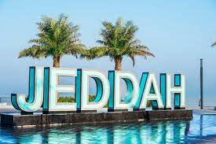

the economy
 Jeddah has long been a port city. Even before being designated the port city for Mecca, Jeddah was a trading hub for the region. In the 19th century, goods such as mother-of-pearl, tortoise shells, frankincense, and spices were routinely exported from the city. Apart from this, many imports into the city were destined for further transit to the Suez, Africa, or Europe. Many goods passing through Jeddah could not even be found in the city or even in Arabia.All of the capitals of the Middle East and North Africa are within two hours flying distance of Jeddah, making it the second commercial center of the Middle East after Dubai. Also, Jeddah's industrial district is the fourth largest industrial city in Saudi Arabia after Riyadh, Jubail and Yanbu.